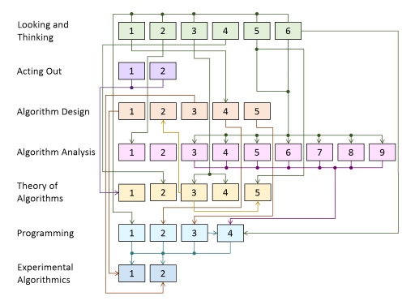
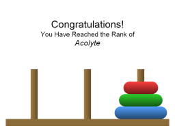
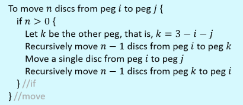
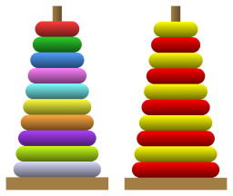
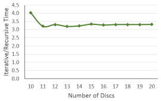

Active Learning with Ian Parberry's Towers of Hanoi
Introduction
The Towers of Hanoi puzzle is a fun way to get students thinking logically and algorithmically, which is an important first step to becoming a programmer. It is also a gateway to attaining some of the more difficult skills that separate the professional programmer from the novice: theoretical skills such as algorithm design, algorithm analysis, and theory of algorithms; and practical skills such as programming and experimental algorithmics. Specific topics touched upon include divide-and-conquer, recursion, stacks, recurrence relations, and mathematical induction.
We begin with some relatively simple activities that, while they are accessible to grade school or high school students, can be profitable to even the most jaded of graduate students. Competitive Activities gets students to compete against each other to see who can solve the Towers of Hanoi with the largest number of discs. Looking and Thinking Activities engage students in experimenting with the Towers of Hanoi app, and asks them to think about and report their observations. Acting Out Activities asks students to act out an algorithm in pseudocode using the Towers of Hanoi app.
The remaining activities are intended for undergraduate and graduate students. The main theme is enabling students to generalize from the small examples in the Towers of Hanoi app. Algorithm Design Activities has students compose algorithms for interesting variants of the Towers of Hanoi puzzle. Algorithm Analysis Activities involve the construction of mathematical formulae for the number of moves made by the standard algorithm and the algorithms from the Algorithm Design Activities. Theory of Algorithms Activities has students investigate some of the properties of their algorithms. Programming Activities invites students to code up their algorithms. Experimental Algorithmics Activities engages students in measuring the run-time of their programs in order to identify which algorithmic techniques are faster in practice.
Dependencies
The following diagram shows the dependencies between the activities. Click for a larger image.
{kind=link}
Competitive Activities
Competitive activities help engage student interest. They can be used first thing to get students motivated, as breaks from the more rigorous activities, or after they have done some of the activities so that they can apply what they have learned, if anything. Have students try to solve the Towers of Hanoi with as many discs as they can and report the result to the class. They will get a humorous rank for each puzzle solved. The ability to follow instructions and to drag and drop with the mouse are all that is necessary to participate in this activity. Graduate students may get as much out of it as 6 year-olds.
Looking and Thinking Activities
The activities in this section are best done in groups, although it can also be profitable for students to do them individually. They are accessible even to young students who have not yet learned to program. The ability to follow instructions, drag and drop with the mouse, and some logical, observational, and reporting skills are all that is really necessary.
- Watch the solution for the Towers of Hanoi with 4 discs. Reset it, and press the Step button 7 times. What do you think the algorithm was doing up to this point? What do you think it will do next? Watch the solution for the Towers of Hanoi with 5 discs. Reset it, and press the Step button 15 times. Can you see anything interesting? How many steps do you think it will take to get to this point with 6 discs? Try it out and see if you are right.
- Watch the solutions for the Towers of Hanoi with 3, 4, 5, and 6 discs with the Count checkbox checked. Write down the number of moves that it takes each time. Can you see a pattern to these numbers? Why do you think this pattern exists?
- Watch the solution for the Towers of Hanoi with 6 discs. When does the red disc move? How does it move? What about the green disc? The blue one? Is there any pattern here?
- Uncheck the Colors checkbox and watch the solution for the Towers of Hanoi with 6 discs. Do you notice anything special about the stacked discs?
- Watch the solution for the Towers of Hanoi for 3 or 4 discs with each of the 5 Restrictions on Motion. what is similar about them? what is different about them? watch the smallest disc in particular.
- Construct a table that shows, for \(1 \leq n \leq 8\), the number of moves used by autosolve to solve the Towers of Hanoi for \(n\) discs with each of the 5 Restrictions on Motion. Your table should look something like the following. Examine the entries for the "move through a peg" restrictions. Can you see any patterns? Similarly, can you see any patterns for the "rotate" restrictions?
From here on, the activities require knowledge of things that are normally taught in an advanced high school or introductory undergraduate programming class.
Acting Out Activities
The standard algorithm (that is, the recursive one that's always taught in intro programming classes) for the Towers of Hanoi puzzle with \(n\) discs looks like the following. Number the pegs 0, 1, and 2 from left to right. Our aim is to move \(n\) discs from peg 0 to peg 2. However, we need to come up with a general method for moving \(n\) discs from peg \(i\) to peg \(j\) that works for all \(i\) and \(j\) between 0 and 2.
- Does the above algorithm work correctly for \(n=1\)? For \(n=2\)? How many recursive calls are made?
- Act out the above algorithm for \(n=3,\) and \(n=4\). How many recursive calls are made?
Algorithm Design Activities
The activities in this section require knowledge of algorithm design (preferably using pseudocode), particularly recursive algorithms.
- Design a non-recursive algorithm for the Towers of Hanoi using a stack data structure. You can probably find one online, but you will learn more if you design it yourself.
- Design a non-recursive algorithm for the Towers of Hanoi that doesn't use a stack. (Hint: See Theory of Algorithms Activity 3).
- The standard algorithm only solves the Towers of Hanoi when all discs start on the leftmost peg. Design a simple recursive algorithm that will solve it from any legal start configuration (that is, the discs may be on any pegs but they must be in ascending order of size from bottom to top on each peg). If you have trouble getting started, try observing autosolve in action.
- Following up on Looking and Thinking Activity 1, devise an algebraic formula that gives you the peg that disc \(i\) will be on after \(m\) moves on \(n\) discs. (hint the answer will depend mostly on \(i\) and \(m\). the direction will also depend on whether \(n\) is odd or even.) this formula lets you can jump very quickly to any point in the solution without having to go through all of the intervening steps, which is how we are able to show progress on the towers of hanoi with 64 discs since the big bang in The Tower of Brahma and the End of the Universe.
- Devise recursive algorithms for the Towers of Hanoi with each of the 5 Restrictions on Motion. Surprisingly, you should find that the 5 algorithms all fit the following template:
Algorithm Analysis Activities
The activities in this section require knowledge of algorithm analysis techniques, particularly the construction and solution of recurrence relations.
- Following up on Looking and Thinking Activity 2, show that the standard algorithm for the Towers of Hanoi puzzle with \(n\) discs uses \(2^n-1\) moves. Hint: Devise a recurrence relation for the number of moves, then solve it either by induction or by repeated substitution.
- Show that any solution to the Towers of Hanoi puzzle with \(n\) discs must make at least \(2^n-1\) moves. This shows that autosolve uses the minimal number of moves.
The next set of activities are about the analysis of the number of moves made by the Towers of Hanoi algorithms with Restrictions on Motion. They follow up on Looking and Thinking Activity 6 and Algorithm Design Activity 5, which should be attempted first.
- Let \(T_0(n)\) be the number of moves used by the Towers of Hanoi algorithm with \(n\) discs when all moves must be through peg 0. Show that \(T_0(1)=1\) and for all \(n \geq 2\), $$T_0(n) = 3T_0(n-1)+1.$$ Prove that for all \(n \geq 1\), \(T_0(n) = (3^n - 1)/2\).
- Let \(T_1(n)\) be the number of moves used by the Towers of Hanoi algorithm with \(n\) discs when all moves must be through peg 1. Show that \(T_1(1)=2\) and for all \(n \geq 2\), $$T_1(n) = 3T_1(n-1)+2.$$ Prove that for all \(n \geq 1\), \(T_1(n) = 3^n - 1\).
- Let \(T_2(n)\) be the number of moves used by the Towers of Hanoi algorithm with \(n\) discs when all moves must be through peg 2. Show that \(T_2(1)=1\) and for all \(n \geq 2\), $$T_2(n) = 3T_2(n-1)+1.$$ Prove that for all \(n \geq 1\), \(T_2(n) = (3^n - 1)/2\).
- Let \(T_R(n)\) be the number of moves used by the Towers of Hanoi algorithm with \(n\) discs when all moves must rotate to the right. Show that \(T_R(1)=2\) and for all \(n \geq 2\), $$T_R(n) \leq 3T_R(n-1)+2.$$ Prove that for all \(n \geq 1\), \(T_R(n) \leq 3^n - 1\).
- Let \(T_L(n)\) be the number of moves used by the Towers of Hanoi algorithm with \(n\) discs when all moves must rotate to the left. Show that \(T_L(1)=1\) and for all \(n \geq 2\), $$T_L(n) \leq 3T_L(n-1)+1.$$ Prove that for all \(n \geq 1\), \(T_L(n) \leq (3^n - 1)/2\).
The following two activities are advanced, perhaps at the difficulty level of a graduate student in computer science who is specializing in the mathematics of computing.
- Let \(T_R(n)\) be the number of moves used by the Towers of Hanoi algorithm with \(n\) discs when all moves must rotate right. Show that \(T_R(1)=2\), \(T_R(2)=7\) and for all \(n \geq 3\), $$T_R(n) = 2(T_R(n-1)+T_R(n-2)) + 3.$$ Prove that for all \(n \geq 1\), $$T_R(n) = \frac{(1-\sqrt{3})^{n+1} + (3\sqrt{3}+5)(1+\sqrt{3})^n}{2\sqrt{3}(1+\sqrt{3})} - 1.$$
- Let \(T_L(n)\) be the number of moves used by the Towers of Hanoi algorithm with \(n\) discs when all moves must rotate left. Show that \(T_L(1)=1\), \(T_L(2)=5\) and for all \(n \geq 3\), $$T_L(n) = 2(T_L(n-1)+T_L(n-2)) + 3.$$ Prove that for all \(n \geq 1\), $$T_L(n) = \frac{(1-\sqrt{3})^n + (\sqrt{3}+2)(1+\sqrt{3})^n}{\sqrt{3}(1+\sqrt{3})} - 1.$$
Theory of Algorithms Activities
The activities in this section require knowledge of techniques used in the theory of algorithms, particularly mathematical induction.
- Following up on Acting Out Activity 1 and Acting Out Activity 2, prove that the standard algorithm for the Towers of Hanoi is correct, that is, it moves \(n\) discs from peg \(i\) to peg \(j\) without placing a disc on a smaller one.
- Following up on Looking and Thinking Activity 4, prove by induction on the number of discs that when the discs are colored alternately using two colors, the standard algorithm never places two discs of the same color on top of each other.
- Following up on Looking and Thinking Activity 3, Prove the following by induction on the number of discs, \(n\). If \(n\) is even, the solution alternates between moving the smallest disc one peg to the right (wrapping around to the leftmost peg) and making the only other legal move. If \(n\) is odd, the solution alternates between moving the smallest disc one peg to the left (wrapping around to the rightmost peg) and making the only other legal move. Verify this claim experimentally by observing the animation carefully. It might help to set the animation speed set on Slow. This gives you a nonrecursive algorithm for the Towers of Hanoi that doesn't use a stack.
- Following up on Looking and Thinking Activity 3, show that in the standard algorithm for the Towers of Hanoi puzzle with \(n\) discs, the \(i^{th}\) smallest disc makes \(2^{n-i-1}\) moves for all \(0 \leq i \leq n\).
- Following up on Looking and Thinking Activity 5, modify the technique from Theory of Algorithms Activity 3 for each of the 5 Restrictions on Motion.
Programming Activities
The activities in this section require programming skills, a computer, and a compiler. However, they do require at least the solutions to the more theoretically oriented activities above. Students can probably find code online, but they will learn more if they program it themselves.
-
Write programs that implement the algorithms from
Algorithm Design Activities 1, 2, 3, 5, and 6.
The input to your program should be the number of discs \(n\),
and the output should be the moves that solve it, one per line, as follows:
0->1
0->2
1->2
etc.
where, for example, 0->1 means a move of a single disc from peg 0 to peg 1 when the pegs are numbered 0, 1, and 2 from left to right. - Write a program that implements the algorithm from Algorithm Design Activities 4. The input should also include a file containing the initial configuration of the puzzle. The design of this file format is left up to you.
- Write programs that implement the algorithms from Algorithm Design Activities 5.
- Modify and use your programs from Programming Activities 3 to extend the table from Looking and Thinking Activities 6 to \(n=9, 10\) and (if you have the patience) beyond. Do your results match the expectations of Algorithm Analysis Activities 3-9?
Experimental Algorithmics Activities
The activities in this section require solid theoretical, programming, and analytic skills. They depend on code from the Programming Activities.
- Which algorithm is faster in practice, the recursive one or the nonrecursive one? Begin with the programs for these algorithms that you wrote in the Programming Activities. disable all of the output code, and add code to measure the amount of cpu time used when solving the puzzle. this code will vary from one programming language to another, and from one operating system to another. the amount of cpu time used will typically be very, very, very small, so you will probably need to solve the puzzle from scratch somewhere from 1,000 to 10,000 times to get cpu times that register at all.  Have your program measure this for \(10 \leq n \leq 20\) discs and output the resulting times. Compare the recursive algorithm from the Acting Out Activities to the nonrecursive one that uses a stack from Algorithm Design Activity 1. Plot the ratio of the nonrecursive time over the recursive time against the value of \(n\). Your graph should look similar to the one shown here, but the exact numbers will vary with programming language, compiler, operating system, computing hardware, and your competence as an algorithm designer and a programmer. Which is faster? Why do you think this is so? Explain the shape of your graph.
- Repeat the above with the nonrecursive algorithm from Algorithm Design Activities 3. Which is faster? Why do you think this is so? Explain the shape of your graph.